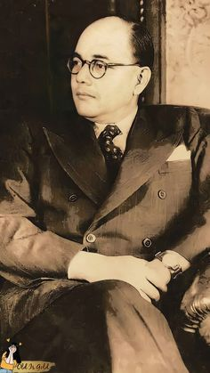
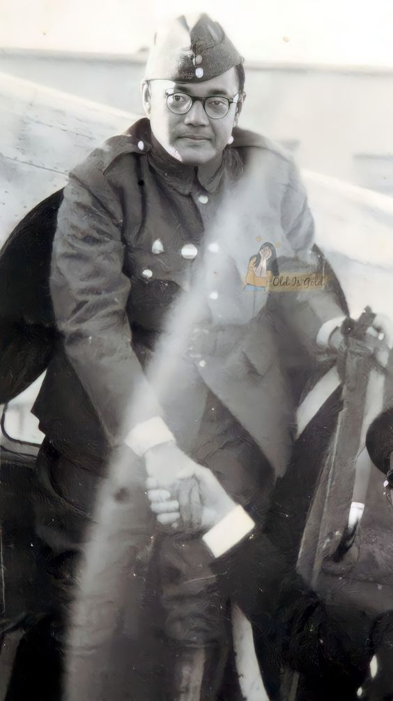
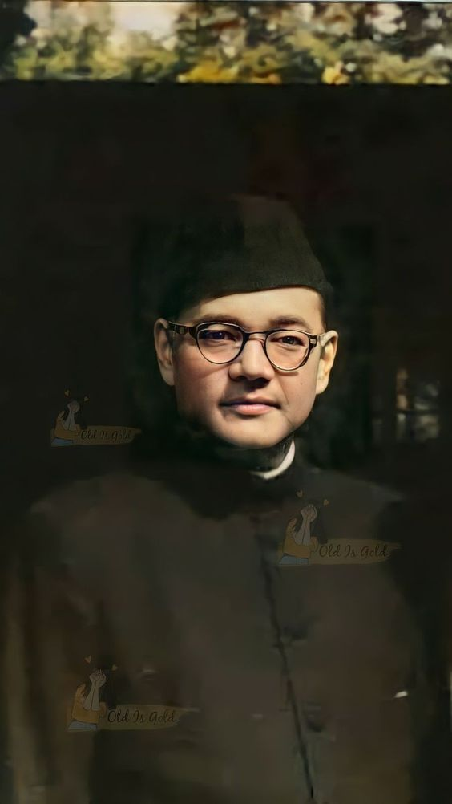

Subhash Chandra Bose
subash chandra bose also known as Netaji, has always been an inspiration to me because of his:Unwavering Resolve
Even when facing imprisonment, exile, and disagreements with other leaders, Bose never faltered in his dedication to Indian independence. This unwavering resolve is a constant source of motivation.Strategic Brilliance:
He wasn't afraid to challenge the status quo. By seeking alliances with Germany and Japan and forming the Indian National Army (INA), he took a multi-pronged approach, putting the British on their heels. His strategic brilliance in defying conventional tactics is truly inspiring.Inspiring Leadership:
Bose possessed an undeniable charisma that drew immense devotion. His powerful speeches and pronouncements could ignite passion in the hearts of millions. He was able to rally thousands of young Indians to join the INA, the first organized force to militarily challenge British rule.His achievements and contributions to India's independence movement are equally remarkable:
Leading the INA:
The INA, formed under Bose's leadership, was a powerful symbol of India's fight for freedom. Over 40,000 strong, the INA fought alongside Japanese forces in Burma, striking a significant blow to British rule.Establishing the Azad Hind Government:
This government-in-exile served as a beacon of hope, garnering international recognition for India's struggle for independence.Popularizing Powerful Slogans:
Slogans like "Jai Hind" (Victory to India) became rallying cries for the freedom movement and continue to inspire Indians today.Championing Social Justice:
Bose envisioned an independent India free from economic exploitation. He advocated for socialist ideals, and his ideas about social justice continue to influence Indian politics.Empowering Women:
In a revolutionary move at the time, Bose actively recruited women into the INA. This bold act challenged traditional gender roles and empowered women to play a vital role in the freedom struggle. Subhash Chandra Bose's unwavering resolve, strategic brilliance, inspiring leadership, and his significant achievements continue to inspire generations of Indians in their pursuit of a just and independent nation.Admirable Qualities
Audacious Courage:
He wasn't afraid to take bold risks. Facing exile, imprisonment, and even defying mainstream leadership within the independence movement, Bose's courage in the face of adversity is a constant source of inspiration.Unifying Vision:
Bose envisioned an independent India free from religious or social divisions. He actively recruited women into the INA and emphasized national unity as the key to achieving freedom. This vision of an inclusive India continues to resonate today.Passionate Conviction:
Bose's dedication to Indian independence burned brightly. His powerful speeches and unwavering commitment to the cause are a testament to his passionate conviction, inspiring others to share his dream of a free India.
Photo Gallery


